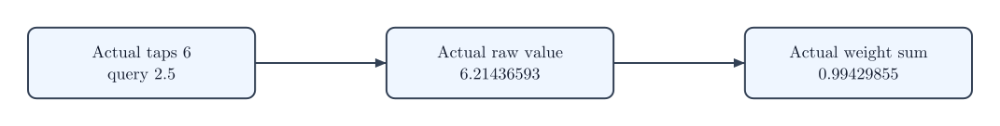
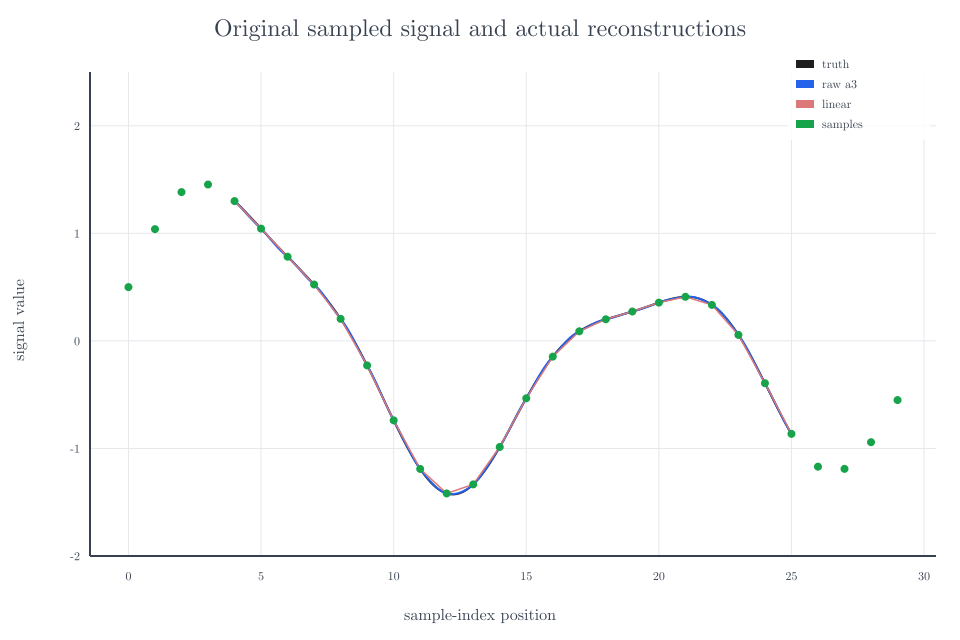
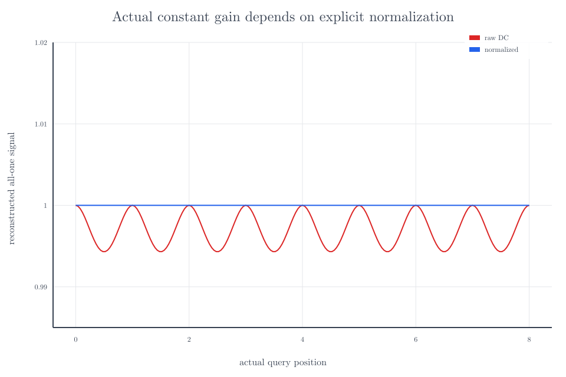
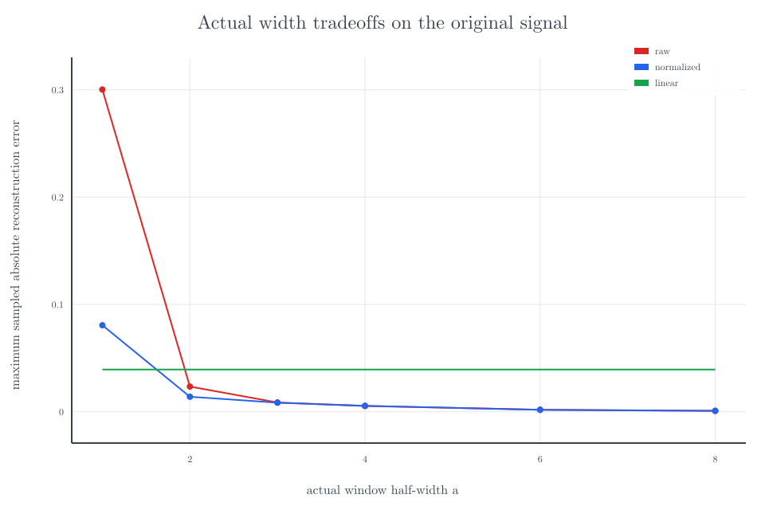

Lanczos resampling through actual window taps
Abstract
Reconstructing a sampled signal between integer positions requires a rule for weighting nearby observations and handling finite boundaries. Lanczos uses a finite windowed-sinc kernel whose negative lobes can improve reconstruction on some smooth signals while also causing ringing and phase-dependent raw gain. We inspect actual tap identities/products, retain the original thirty-sample signal, and compare raw and explicitly normalized modes. Neither a finite window nor a good example supplies a universal accuracy or antialiasing guarantee.
A finite window is a specific reconstruction rule
For positive integer half-width a, define
For a query p, the native producer clamps its position to[0,n−1], then visits virtual lattice taps floor(p)−a+1 through floor(p)+a in ascending order. Lookup indices are separately clamped to border samples, retaining edge extension near the boundary. The raw result sums sample*weight without dividing by the total weight, matching the historical interior formula. Kernel weights need not sum exactly one at a fractional phase, so constant samples can have phase-dependent raw gain. Normalization is a separate explicit mode using the actual weight sum.
The mathematical kernel is cardinal at integer positions. The native implementation now explicitly returns zero for nonzero exactly integral sinc arguments, avoiding sin(pi*k) remnants and preserving numeric integer-sample equality. This and safe clamping of the query correct the old outside-position comment/implementation mismatch and unsafe empty/nonfinite casts; ordinary interior noninteger arithmetic remains the same finite-window formula.
See one actual six-tap query
Use seven samples0,1,4,9,16,25,36 and p2.5 with a3. The trace records each actual virtual/stored identity, weight, product and accumulation boundary. The diagram summarizes producing raw sum and actual weight sum; it does not generate a second convolution.
#include <dm/dm.hpp>
int main() {
std::filesystem::create_directories("build");
const auto t =
dm::algorithms::lanczos_resample_trace({0, 1, 4, 9, 16, 25, 36}, 2.5, 3);
std::print("| actual virtual tap | stored sample identity | actual sample | actual raw weight | actual " "weighted value | actual sum after |\n| ---: | ---: | ---: | ---: | ---: | ---: |\n");
for (const auto &e : t.taps)
std::print("| {} | {} | {:.9f} | {:.12f} | {:.12f} | {:.12f} |\n",
e.virtual_index, e.sample_index, e.sample, e.weight,
e.weighted_value, e.sum_after);
const auto &a = t.analysis;
std::print("\nActual raw sum {:.12f}; actual weight sum {:.12f}; negative weights {}; clamped lookups " "{}.\n",
a.raw_sum, a.weight_sum, a.work.negative_weights,
a.work.clamped_taps);
dm::graphics::Diagram d;
d.node("taps", {0, 0},
std::format("Actual taps {}\nquery {}", a.work.taps,
a.effective_position)).node("sum", {6, 0},
std::format(
"Actual raw value\n{:.8f}",
a.raw_sum)).node(
"weights", {12, 0},
std::format("Actual weight sum\n{:.8f}", a.weight_sum)).edge("taps",
"sum").edge("sum", "weights").save_svg("build/lanczos_resampling_taps.svg");
}| actual virtual tap | stored sample identity | actual sample | actual raw weight | actual weighted value | actual sum after |
|---|---|---|---|---|---|
| 0 | 0 | 0.000000000 | 0.024317084074 | 0.000000000000 | 0.000000000000 |
| 1 | 1 | 1.000000000 | -0.135094911523 | -0.135094911523 | -0.135094911523 |
| 2 | 2 | 4.000000000 | 0.607927101854 | 2.431708407416 | 2.296613495893 |
| 3 | 3 | 9.000000000 | 0.607927101854 | 5.471343916686 | 7.767957412579 |
| 4 | 4 | 16.000000000 | -0.135094911523 | -2.161518584370 | 5.606438828209 |
| 5 | 5 | 25.000000000 | 0.024317084074 | 0.607927101854 | 6.214365930063 |
Actual raw sum 6.214365930063; actual weight sum 0.994298548810; negative weights 2; clamped lookups 0.

The original thirty-sample signal
Retain f(t)=sin(0.4t)+0.5cos(0.17t)+0.2sin(0.9t), thirty integer samples and raw Lanczos3. Keep the original comparison interval4 through25 and spacing0.05, but construct its421 positions by an integer loop so both endpoints are explicit rather than subject to accumulated step drift. The exact analytic function is an independent reconstruction target on this synthetic control. A separate linear interpolant provides the original baseline, not a universal ranking across signals.
#include <dm/dm.hpp>
int main() {
std::filesystem::create_directories("build");
auto f = [](double t) {
return std::sin(.4 * t) + .5 * std::cos(.17 * t) + .2 * std::sin(
.9 * t);
};
std::vector<double> samples(30);
for (int i = 0; i < 30; ++i)
samples[i] = f(i);
std::vector<double> x, truth, raw, linear;
double re = 0, le = 0;
for (int i = 0; i <= 420; ++i) {
const double p = 4. + i * .05;
const auto k = std::size_t(std::floor(p));
const double fraction =
p - k, l =
(1 - fraction) * samples[k] + fraction * samples[k + 1], r =
dm::algorithms::lanczos_resample_at(samples, p, 3);
x.push_back(p);
truth.push_back(f(p));
raw.push_back(r);
linear.push_back(l);
re = std::max(re, std::abs(r - f(p)));
le = std::max(le, std::abs(l - f(p)));
}
std::print("| original integer control k | actual raw result | original sample |\n| ---: | ---: | ---: " "|\n| 7 | {:.12f} | {:.12f} |\n",
dm::algorithms::lanczos_resample_at(samples, 7, 3), samples[7]);
std::print("\n| original sample count | actual query count | maximum sampled raw reconstruction error | " "maximum sampled linear error |\n| ---: | ---: | ---: | ---: |\n| {} | {} | {:.12e} | " "{:.12e} |\n",
samples.size(), x.size(), re, le);
std::vector<double> sx;
for (int i = 0; i < 30; ++i)
sx.push_back(i);
auto p = dm::graphics::RPlot::create();
p.line(x, truth, "truth", {30, 30, 30}, 2).line(x, raw, "raw a3",
{37, 99, 235}, 2).line(
x, linear, "linear", {220, 120, 120}, 1.5).points(sx, samples,
"samples",
{22, 163, 74}, 4).y_limits(-2, 2.5).title("Original sampled signal and actual reconstructions").x_label("sample-index position").y_label("signal value").save_svg("build/lanczos_resampling_original.svg");
}| original integer control k | actual raw result | original sample |
|---|---|---|
| 7 | 0.524180866383 | 0.524180866383 |
| original sample count | actual query count | maximum sampled raw reconstruction error | maximum sampled linear error |
|---|---|---|---|
| 30 | 421 | 9.135539195536e-03 | 3.933425687223e-02 |

Raw DC ripple, explicit normalization and ringing
For all-one samples, the raw output equals the actual weight sum. Explicit normalization returns one on this control, but does not remove negative kernel weights or guarantee monotone reconstruction of a step. Position clamping makes even huge finite outside queries return the numeric border sample, while near-border virtual taps still use the edge extension.
#include <dm/dm.hpp>
int main() {
std::filesystem::create_directories("build");
const std::vector<double> ones(9, 1);
std::print("| actual query | effective clamped position | actual raw constant output | actual raw " "weight sum | explicitly normalized output |\n| ---: | ---: | ---: | ---: | ---: |\n");
for (double q : {-100., 0., .25, .5, 7.5, 8., 100.}) {
const auto a =
dm::algorithms::lanczos_resample_analyze(ones, q, 3), n =
dm::algorithms::lanczos_resample_analyze(ones, q, 3, true);
std::print("| {:.2f} | {:.2f} | {:.12f} | {:.12f} | {:.12f} |\n", q,
a.effective_position, a.value, a.weight_sum, n.value);
}
const std::vector<double> step = {0, 0, 0, 0, 1, 1, 1, 1, 1};
std::print("\n| normalized step query | actual normalized value |\n| ---: | ---: |\n");
for (double q : {2.5, 3.5, 4.5})
std::print("| {:.1f} | {:.12f} |\n", q,
dm::algorithms::lanczos_resample_analyze(step, q, 3, true).value);
std::vector<double> x, y, z;
for (int i = 0; i <= 200; ++i) {
const double q = i / 25.;
x.push_back(q);
y.push_back(dm::algorithms::lanczos_resample_analyze(ones, q, 3).value);
z.push_back(dm::algorithms::lanczos_resample_analyze(ones, q, 3, true).value);
}
auto p = dm::graphics::RPlot::create();
p.line(x, y, "raw DC", {220, 38, 38}, 2).line(x, z, "normalized",
{37, 99, 235}, 2).y_limits(
.985, 1.02).title("Actual constant gain depends on explicit normalization").x_label("actual query position").y_label("reconstructed all-one signal").save_svg("build/lanczos_resampling_dc.svg");
}| actual query | effective clamped position | actual raw constant output | actual raw weight sum | explicitly normalized output |
|---|---|---|---|---|
| -100.00 | 0.00 | 1.000000000000 | 1.000000000000 | 1.000000000000 |
| 0.00 | 0.00 | 1.000000000000 | 1.000000000000 | 1.000000000000 |
| 0.25 | 0.25 | 0.996971537988 | 0.996971537988 | 1.000000000000 |
| 0.50 | 0.50 | 0.994298548810 | 0.994298548810 | 1.000000000000 |
| 7.50 | 7.50 | 0.994298548810 | 0.994298548810 | 1.000000000000 |
| 8.00 | 8.00 | 1.000000000000 | 1.000000000000 | 1.000000000000 |
| 100.00 | 8.00 | 1.000000000000 | 1.000000000000 | 1.000000000000 |
| normalized step query | actual normalized value |
|---|---|
| 2.5 | -0.111413043478 |
| 3.5 | 0.500000000000 |
| 4.5 | 1.111413043478 |

Window width is a measured tradeoff
Compare a1,2,3,4,6,8 on the same original signal, using a common1301-position interior interval8 through21. Every window stays within the thirty original samples. Each raw and normalized query is a complete native evaluation. The profile records actual2*a tap work alongside finite-grid reconstruction errors; it does not assume increasing width always lowers error. Linear interpolation is an explicit fixed baseline. The method performs no separate antialiasing prefilter or cutoff adjustment for aggressive downsampling.
#include <dm/dm.hpp>
int main() {
std::filesystem::create_directories("build");
auto f = [](double t) {
return std::sin(.4 * t) + .5 * std::cos(.17 * t) + .2 * std::sin(
.9 * t);
};
std::vector<double> samples(30);
for (int i = 0; i < 30; ++i)
samples[i] = f(i);
std::vector<double> x, y, z, l;
std::print("| actual lobes a | actual grid size | actual taps per query | maximum sampled raw error | " "maximum sampled normalized error | maximum sampled linear error |\n| ---: | ---: | ---: | " "---: | ---: | ---: |\n");
for (int a : {1, 2, 3, 4, 6, 8}) {
double re = 0, ne = 0, le = 0;
std::size_t taps = 0;
for (int i = 0; i <= 1300; ++i) {
const double q = 8. + i * .01;
const auto k = std::size_t(std::floor(q));
const double fraction = q - k;
const auto r =
dm::algorithms::lanczos_resample_analyze(samples, q, a), n =
dm::algorithms::lanczos_resample_analyze(samples, q, a, true);
re = std::max(re, std::abs(r.value - f(q)));
ne = std::max(ne, std::abs(n.value - f(q)));
le =
std::max(le,
std::abs((1 - fraction) * samples[k] +
fraction * samples[k + 1] - f(q)));
taps = r.work.taps;
}
std::print("| {} | 1301 | {} | {:.12e} | {:.12e} | {:.12e} |\n", a,
taps, re, ne, le);
x.push_back(a);
y.push_back(re);
z.push_back(ne);
l.push_back(le);
}
auto p = dm::graphics::RPlot::create();
p.line(x, y, "raw", {220, 38, 38}, 2).points(x, y, "", {220, 38, 38}, 4).line(x, z, "normalized", {37, 99, 235}, 2).points(x, z, "", {37, 99, 235}, 4).line(x, l, "linear", {22, 163, 74}, 2).title("Actual width tradeoffs on the original signal").x_label("actual window half-width a").y_label("maximum sampled absolute reconstruction error").save_svg("build/lanczos_resampling_width.svg");
}| actual lobes a | actual grid size | actual taps per query | maximum sampled raw error | maximum sampled normalized error | maximum sampled linear error |
|---|---|---|---|---|---|
| 1 | 1301 | 2 | 3.002927506321e-01 | 8.064318205772e-02 | 3.934017254058e-02 |
| 2 | 1301 | 4 | 2.347427365860e-02 | 1.397016233185e-02 | 3.934017254058e-02 |
| 3 | 1301 | 6 | 8.610086477866e-03 | 8.442588688862e-03 | 3.934017254058e-02 |
| 4 | 1301 | 8 | 5.385285920451e-03 | 5.517497800115e-03 | 3.934017254058e-02 |
| 6 | 1301 | 12 | 1.808856462581e-03 | 1.847830774549e-03 | 3.934017254058e-02 |
| 8 | 1301 | 16 | 7.758737626502e-04 | 9.145858919140e-04 | 3.934017254058e-02 |

Scope and verification
Complete finite nonempty samples, positive lobes, finite queries and representable integer window geometry are checked before indexing or copies. Query clamping precedes floor-to-integer conversion. Every product/sum/result must remain finite; this conservative arithmetic policy can reject data whose ideal cancellation would be finite. Scalar queries cost O(n+a) including validation; vector queries validate once and cost O(n+Q*a). Trace admission counts all n original samples plus2*a actual tap records before copies/evaluation, with a million-entry default and zero disabling only that optional cap. It excludes fields/capacities/bytes/RAM. All records own their values and no replay constructs taps.
Independent scalar sinc/weight references verified2000 resamplings and11892
actual tap records, including raw versus normalized accumulation and clamped
lookup identities. Another1000 ordinary interior raw resamplings matched the
frozen implementation exactly. Native controls verify integer interpolation, DC
ripple/normalization, negative lobes, complete input/quota guards, finite-range
failures and ownership. The complete ten-report batch passed77 native CTest
cases,39 directly instrumented ASan/UBSan cases,106 compiled/executed public
examples,479/479 scoped definitions and ten representative clangd hovers. All4
complete report programs executed and all4 native figures were visually
reviewed. HTML/Markdown computed result and identical source/build/export figure
bytes passed verification. Repeatable receipts are retained under
build/mepml-conversion/batch-194-203/.
References
C. E. Duchon(1979), Lanczos Filtering in One and Two Dimensions, Journal of Applied Meteorology18(8),1016–1022. Native finite reconstruction support, border clamping, exact integer zeros and optional actual-weight normalization are stated separately from general filtering-quality claims.